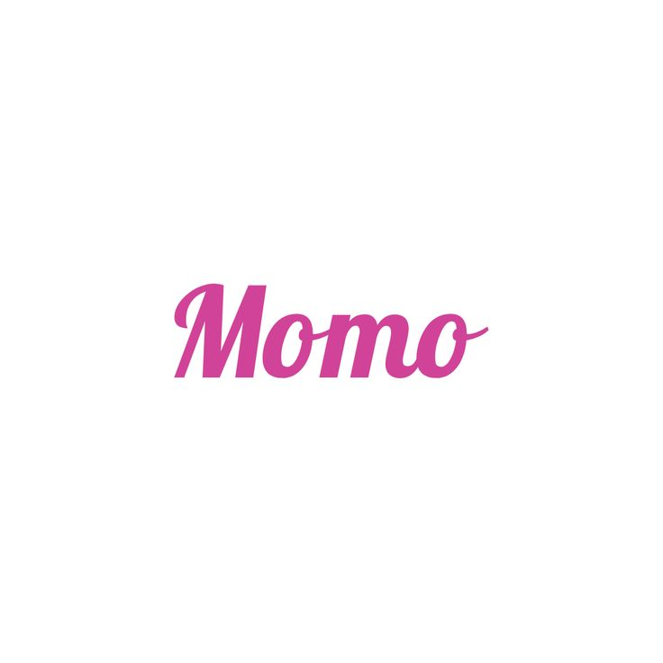

Hirai Momo
Biodata
- Nama Lengkap: Hirai Momo
- Tanggal Lahir: 9 November 1996
- Posisi: Main Dancer, Rapper, Vocalist
- Golongan Darah: A
- Tinggi: 167 cm
- Hobi: Menari, makan, menonton video dance
Biografi & Perjalanan Karier
Hirai Momo lahir di Kyoto, Jepang, pada 9 November 1996. Ia mulai menari sejak usia 3 tahun dan dikenal sebagai penari luar biasa bahkan sejak kecil. Bersama kakaknya, Momo sering mengunggah video menari ke internet, yang akhirnya menarik perhatian JYP Entertainment.
Pada tahun 2012, Momo direkrut oleh JYP Entertainment melalui audisi di Jepang. Ia pindah ke Korea Selatan dan menjadi trainee, menjalani pelatihan intensif selama 3 tahun lebih. Momo dikenal sangat disiplin dan pantang menyerah, bahkan ketika menghadapi kesulitan bahasa dan budaya baru.
Dalam acara survival SIXTEEN pada 2015, Momo awalnya dieliminasi. Namun, karena kemampuan menarinya yang luar biasa dan kontribusinya di tim, JYP memutuskan memasukkannya kembali ke lineup akhir TWICE. Keputusan ini sempat kontroversial, tetapi pada akhirnya terbukti tepat karena Momo menjadi salah satu performer paling kuat di grup.
Sejak debut TWICE, Momo tampil sebagai penari utama dan dikenal dengan gerakan yang eksplosif, akurat, dan penuh energi. Ia sering menjadi koreografer tidak resmi untuk TWICE dan tampil menonjol di berbagai panggung dengan penampilan dance solo-nya.
Momo juga dikenal dengan kepribadiannya yang lucu dan polos. Ia sangat menyukai makanan, terutama daging, dan sering menjadi topik candaan di variety show. Karismanya di atas panggung sangat kontras dengan kepribadiannya yang menggemaskan di luar panggung, menjadikannya sangat disukai oleh ONCE (fandom TWICE).
Dalam berbagai proyek individu dan kolaborasi, Momo terus menunjukkan versatilitasnya sebagai artis. Ia sering tampil dalam konten dance challenge dan spesial stage di berbagai acara penghargaan. Pesonanya telah menjadikannya ikon dance K-pop generasi ke-3.
Hingga kini, Momo terus berkembang sebagai performer dan menjadi inspirasi bagi banyak idol muda. Ia membuktikan bahwa kerja keras dan dedikasi dalam bidang yang dicintai dapat membuahkan hasil luar biasa.
Galeri Foto
.jpg)
.jpg)
.jpg)
.jpg)
Timeline Karier
- 2012 - Bergabung dengan JYP Entertainment
- 2015 - Terpilih sebagai anggota TWICE melalui "SIXTEEN"
- 2019 - Tampil memukau dalam berbagai panggung spesial dance
- 2020 - Ikut serta dalam World Tour "Twicelights"
Kutipan Favorit
"Dancing is my language. I express myself best through movement." – Momo
Komentar Penggemar